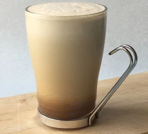

Iced-Coffee

Description
A recipe on how to create the perfect iced-coffee for those hot summer days
Get cool caffeine fix with no fuss. Try it with maple syrup
Ingredients
- 200mL strong black coffee
- 50mL milk
- ice
- maple syrup, optional
Steps
- Make a 200ml cup of black coffee following pack instructions, then allow the coffee to go completely cold. Pour into a blender with the milk along with 2 or 3 handfuls of ice and maple syrup, if using, then blend until smooth and foamy.
- Pour into a chilled tall glass and serve.